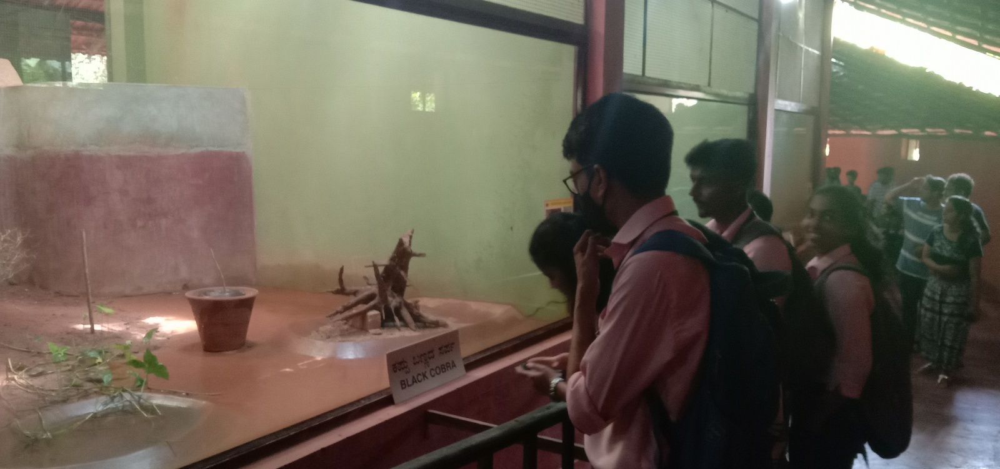

Safety Issues and Procedures: zookeepers can recognise general principles that can be applied to most zoo work places to ensure that employees, visitors and animals have a reduced exposure to risk of injury or escape .Work safely and independently with lower risk animals, according to existing health and safety protocols .Comply with any applicable regional health and safety legislation .Report security issues .Work safely with higher risk animals Train and supervise staff (interns and new employees) for manual animal handling .Develop safety procedures for their work routine

Animal Security: zookeepers incorporate animal security into their daily routines, and can respond appropriately in case of animal escape .Count and verify the number of animals present in the enclosure every day, and after any shifting of animals .Describe institutional protocols for dealing with animal security emergencies (e.g. animal escape, unintentional human-animal contact) and specifically the role they are expected to play .Demonstrate compliance with agreed procedures(e.g .through emergency drills).Support other staff in complying with emergency protocols. Participate as a member of the emergency response team in case of an animal emergency. Train other staff on animal security procedures
Risk Management: zookeepers can identify common hazards associated with highlighting the risk and control measures that should be applied. Perform safe work routine inside or outside animal enclosures according to existing risk assessments. Comply with existing protocols in emergency situations (e.g accidents, injury). Identify hazards within enclosures. Monitor visitors and maintain awareness of the location and behaviour of the animals in animal contact areas. Review and provide feedback on relevant policies, procedures and protocols. Perform appropriate communication with visitors and staff during an emergency situation. Report potential risk issues Develop risk assessments for their work routine.
Health Issues: zookeepers maintain practice of cleanliness with the aim of preventing illness List a variety of types of zoonotic diseases and transmission pathways. Maintain personal hygiene and comply with safe work practices properly. Follow protocols for safe handling and disposal of hazardous materials. Recognise potential risk factors associated with zoonosis and common zoonotic diseases Assess disposal of hazardous materials according to procedures. Participate in animal diagnostic and treatment procedures of zoonotic infection. Design and implement a plan for the disposal of hazardous materials